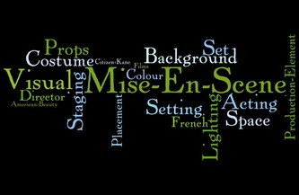

"Mise-en-scene" is a term used in film and theatre to describe the arrangement of everything that appears in the frame or on the stage.
It encompasses elements such as the setting, props, lighting, costumes, and the positioning and movement of actors.
The term comes from French, where it literally means "placing on stage." In film, mise-en-scene is used to create a visual atmosphere that can help to convey the story and mood of the film.
For example, a film set in a dark, eerie forest might use low-key lighting and close-up shots to create a sense of danger and foreboding.
